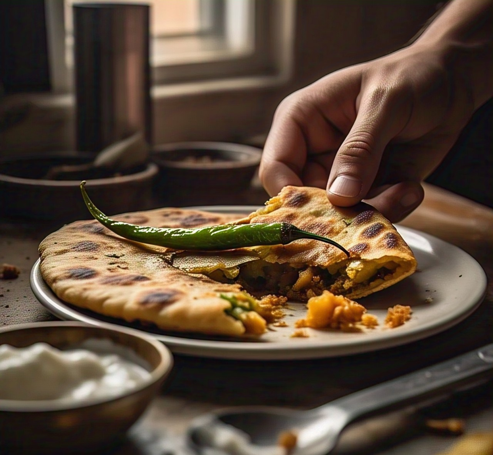

Aloo Paratha
Ingredients:
- 2 cups whole wheat flour (atta)
- 3/4 cup water (adjust as needed)
- salt to taste
- 1 tbsp oil or ghee (optional, for softness)
- Extra dry flour (for rolling)
- 2 large potatoes (boiled & mashed)
- 2 tbsp coriander leaves (chopped)
- 1 green chili (finely chopped)
- 1/2 tsp turmeric powder
- 1/2 tsp red chili powder
- 1/2 tsp garam masala
- 1/2 tsp cumin powder

Recipe:
- Make the Dough:
- Take wheat flour and salt in a mixing bowl.
- Gradually add water and knead to a soft, smooth dough.
- Add oil/ghee and knead for 2-3 minutes more.
- Cover with a damp cloth and rest for 20-30 minutes.
- Prepare stuffing: Combine all stuffing ingredients nicely.
- Rolling Paratha:
- Cut the dough into equal-sized balls.
- Take a ball of dough, roll slightly, fill stuffing, seal, and roll gently. Use dry flour to avoid sticking.
- Cooking Paratha:
- Heat a tava (griddle) on a medium-high flame.
- Keep the rolled chapati on the hot tava. Cook for 30-40 seconds on one side, flip.
- Cook other side till there are brown spots, flip.
- Press lightly with a spatula; it puffs up.
- Take out and add ghee or butter as desired.
Paneer Paratha
Ingredients:
- 2 cups whole wheat flour (atta)
- 3/4 cup water (adjust as needed)
- salt to taste
- Extra dry flour (for rolling)
- 1 cup paneer (grated)
- 2 tbsp coriander leaves (chopped)
- 1 green chili (finely chopped)
- 1/2 tsp black pepper
- 1/2 tsp garam masala
- 1/2 tsp cumin powder
Recipe:
Proceed in the same manner as Aloo Paratha, substituting potato stuffing with paneer stuffing.
Methi Paratha
Ingredients:
- 2 cups whole wheat flour (atta)
- 3/4 cup hot water (add more as needed)
- Salt to taste
- Extra dry flour (for rolling)
- 1 cup fresh methi leaves (chopped)
- 1 green chili (finely grinded)
- 1/2 tsp turmeric powder
- 1/2 tsp cumin powder (Jeera seeds)
- 1/2 tsp carom seeds (ajwain)
Recipe:
- Instead of stuffing, mix methi directly into the dough.
- Roll into parathas and cook on a hot tava with ghee.
mix-veg Paratha
Ingredients:
- 2 cups whole wheat flour (atta)
- 3/4 cup water (adjust as needed)
- 1/2 tsp salt
- Extra dry flour (for rolling)
- 2 boiled potatoes
- 1 chopped onion
- 1/2 cup grated carrot
- 1/2 cup grated cabbage
- 1/4 cup boiled green peas
Recipe:
Proceed in the same manner as Aloo Paratha, substituting potato stuffing with paneer stuffing.